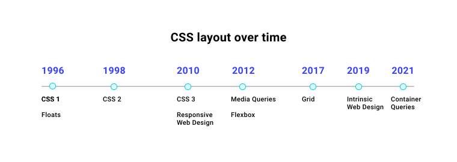
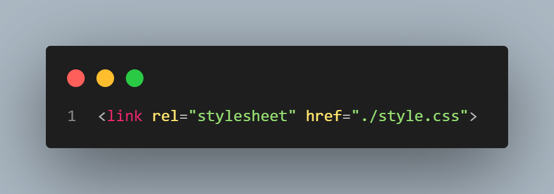
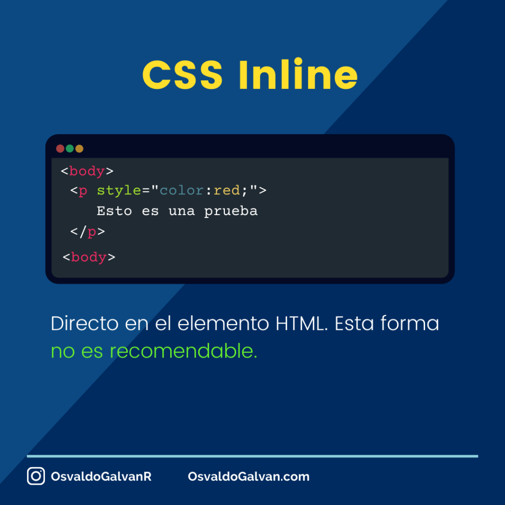
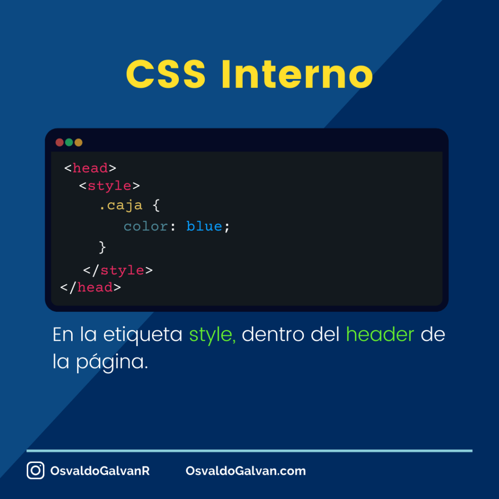
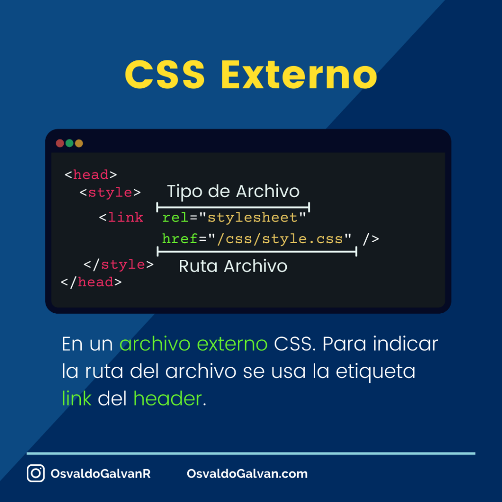

¿Qué es CSS?
CSS son las siglas de Hojas de Estilo en Cascada (Cascading Style Sheets), un lenguaje de diseño que se utiliza para controlar el aspecto visual de documentos web escritos en lenguajes de marcado como HTML. Mientras que el HTML proporciona la estructura y el contenido de una página, el CSS se encarga de su diseño, como el color, la fuente, el tamaño, la posición, los márgenes y otros efectos visuales.
Historia de CSS
CSS fue desarrollado por Håkon Wium Lie en 1994 mientras trabajaba en CERN, la misma organización donde Tim Berners-Lee inventó la World Wide Web. La primera especificación oficial de CSS fue publicada por el World Wide Web Consortium (W3C) en 1996 como CSS1. Desde entonces, CSS ha evolucionado a través de varias versiones, incluyendo CSS2 y CSS3, cada una introduciendo nuevas características y capacidades para mejorar el diseño web.
¿Cómo usar CSS con HTML?
Existen tres formas principales de aplicar CSS a un documento HTML: CSS en línea, CSS interno y CSS externo. Cada método tiene sus propias ventajas y desventajas, y la elección del método adecuado depende de las necesidades específicas del proyecto.
CSS en línea
El CSS en línea se aplica directamente a un elemento HTML utilizando el atributo "style". Este método es útil para aplicar estilos rápidos y específicos a un solo elemento, pero no es recomendable para proyectos grandes debido a la dificultad de mantenimiento y la falta de reutilización de estilos.
CSS interno
El CSS interno se define dentro de una etiqueta <style> en la sección <head> del documento HTML. Este método es útil para aplicar estilos a una sola página web, permitiendo una mejor organización que el CSS en línea, pero aún así puede dificultar la reutilización de estilos en múltiples páginas.
CSS externo
El CSS externo se guarda en un archivo separado con la extensión .css y se enlaza al documento HTML mediante la etiqueta <link> en la sección <head>. Este método es el más recomendado para proyectos grandes, ya que permite una fácil reutilización de estilos en múltiples páginas y facilita el mantenimiento del código.
